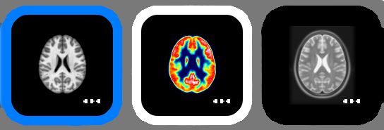

Thumbnail bar
The thumbnail bar is displayed below toolbar. Volumes opened in PySisyphe are displayed as thumbnails in this bar.
To open a volume, double-click on an empty space in the thumbnail bar.
Right-click on an empty space in the thumbnail bar to display a popup menu:
Open volume, to open a volume in the thumbnail bar.
Save all volume(s), to save all volumes opened in the thumbnail bar.
Close all volume(s), to close all volumes opened in the thumbnail bar.
Thumbnails
{kind=link}
Thumbnail volume has three possible states:
No color border: volume of the current thumbnail is neither displayed as a reference nor as an overlay in the central viewing area (slice view, orthogonal view, synchronized view, projection vien or multi-component view)
Blue border: volume of the current thumbnail is displayed as reference in the central viewing area (slice view, orthogonal view, synchronized view, projection vien or multi-component view)
White border: volume of the current thumbnail is displayed as overlay in the central viewing area (slice view, orthogonal view, synchronized view, projection vien or multi-component view)
A tooltip pops when mouse pointer remains over a thumbnail. It shows all the thumbnail’s volume attributes.
LUT widget
{kind=link}
A Look-Up-Table (LUT) colormap widget is displayed last in the popup menu.
The upper part of the widget shows the extent of the windowing as a yellow frame (1) overlaid on the volume histogram. The left edge of the frame represents the lower threshold, the right edge the upper threshold. Threshold values are written vertically in the center of each edge. The frame can be moved by pressing the left mouse button and dragging. Press the left mouse button and drag to move the left or right border (2, click inner part inside the frame).
At the bottom of the widget, there are two boxes to the left and right (4, 5). They display and modify the range of volume values, from minimum (left box) to maximum (right box). The combobox in the middle (3) allows you to change the LUT colormap. The order of colors in the colormap can be reversed with the “Reverse” check box.
Overlay widget
When the thumbnail volume is displayed as overlay, new widgets are displayed above the LUT widget:
 show/hide overlay.
show/hide overlay.horizontal slide bar to change overlay opacity (from 0 to 100%).